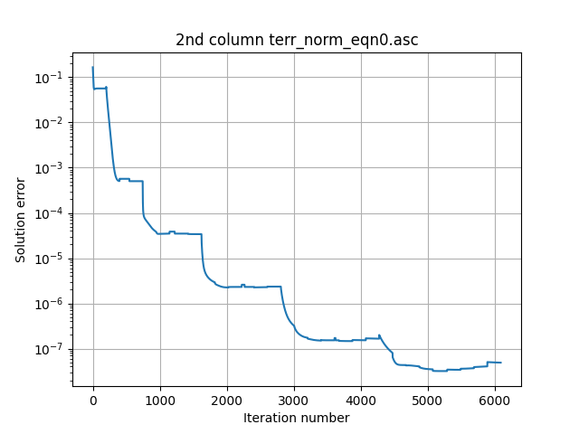

Gallery: Poisson equation
This example shows how to solve the Poisson equation with a generic source term using the CT_MultiLevel elliptic solver. Documentation for CT_MultiLevel is available. To assess the performance of the algorithm, we start by prescribing a solution phi0 (in this case, a superposition of Gaussian functions), and construct the source term by taking the Laplacian of phi0. The plots show the final solution phi (color plot), the source term (white contour surfaces) and the solution error phi-phi0 as a function of the iteration number.
| Parameter file | poisson.par |
|---|---|
| Thornlist | ET development master |
| approx. memory | 32 GB |
| approx. runtime | 35 min using 8 CPUs (1 node, 8 mpi tasks, and 1 cpu per task) |
| Results (293MB) | poisson_20201119.tar.gz |
This example was last tested on 19-Nov-2020.
Solution and sources

Solution Error
